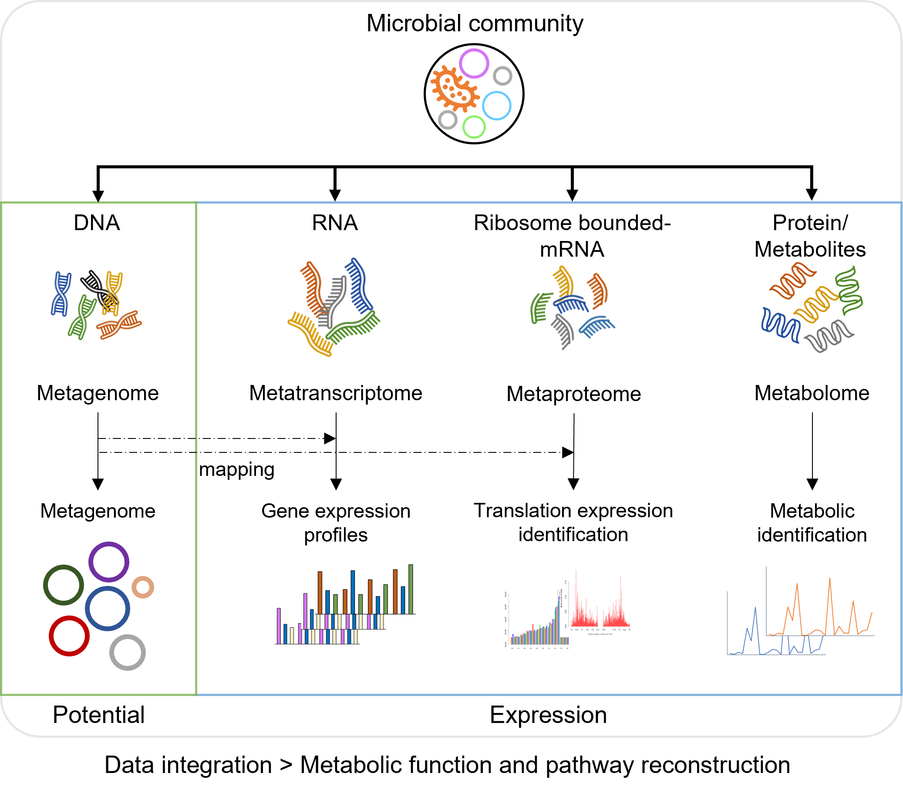

ABOUT US
PROTOCOLS
GENOME CATALOG
GENE CATALOG
BLAST
SAMPLES
MetaGenomics SOP
Sequencing
Biological samples
DNA preparation
Sequencing
Analysis
Installation
Preprocessing of the sequencing reads
Read-based profiling
De novo
assembly
Taxonomic annotation of contigs
Functional annotation of contigs
Binning
Phylogenomic tree construction of the MAG
MetaTrasncriptomic SOP
Sequencing
Biological samples
RNA preparation
Sequencing
Analysis
Installation
Preprocessing of the sequencing reads
=Reference-guided analysis=
Read alignment
Transcriptional expression analysis
Differential expression analysis
=Reference-independent analysis=
Transcript
de novo
assembly
Transcript taxonomy classification
Read-based profiling
MetaProteomic SOP
Sequencing
Biological samples
Ribosome-bound mRNA preparation
Sequencing
Analysis
Installation
Preprocessing of the sequencing reads
Reads alignment
Ribosome profiling
Small protein prediction
Translational quantification
Differential expression analysis
Read-based profiling
프로그램 설치
분석 전에 설치가 가능하고 분석을 진행할때에 맞춰 필요 프로그램을 설치하는 것도 가능함

멀티오믹스 정보기반 마이크로바이옴 기능분석